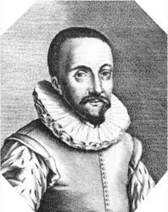
1608 · 荷兰
第一架望远镜
荷兰眼镜商汉斯·利珀希发现：凸透镜 + 凹透镜，可放大 3 倍。
从 17 世纪初荷兰眼镜铺里的第一片透镜，
到贵州山坳中口径 500 米的“中国天眼”。

荷兰眼镜商汉斯·利珀希发现：凸透镜 + 凹透镜，可放大 3 倍。
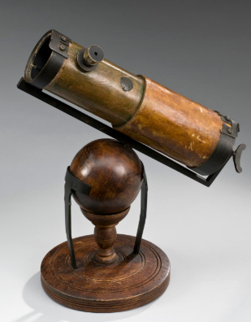
伽利略把倍数提到 30 倍，首次看清月球环形山和木星卫星。
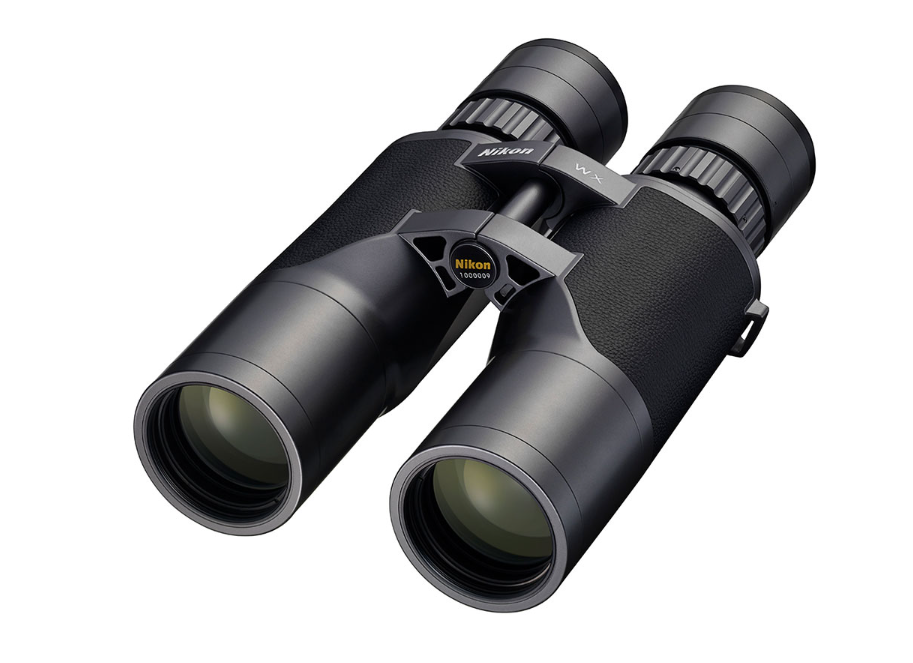
各色光折射率不同，焦点无法重合，图像边缘出现彩色条纹。
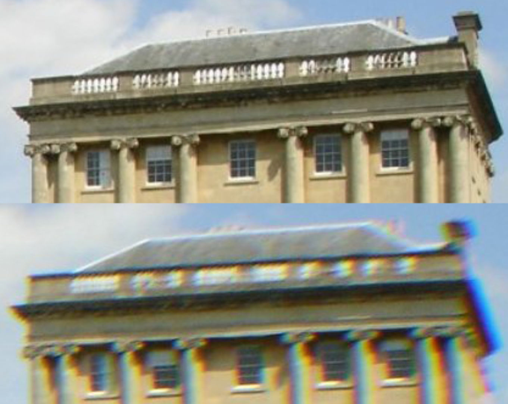
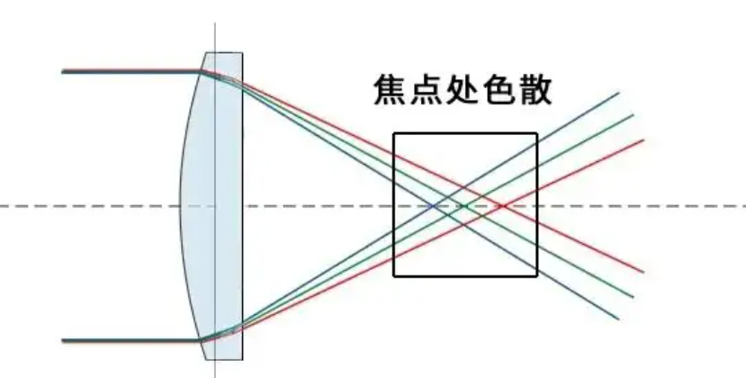
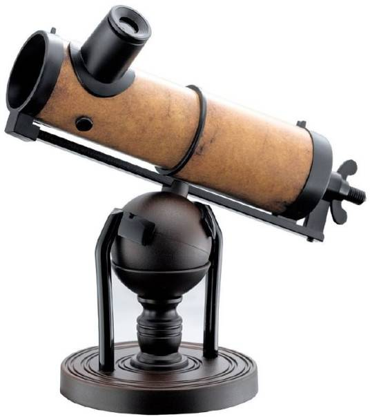
用凹面镜收集光线，没有色差。
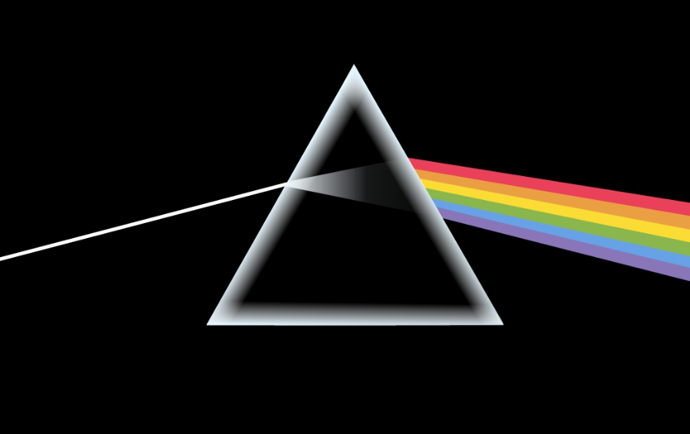
光碰到表面被弹回，继续传播——这就是光的反射。
反射镜无色差，天体颜色更真实。
PhET 几何光学模拟 ↗折射 + 反射，突破单一结构的局限。
主镜、次镜加透镜组，减少色差与球差。
结构紧凑，便于携带，适用范围更广。
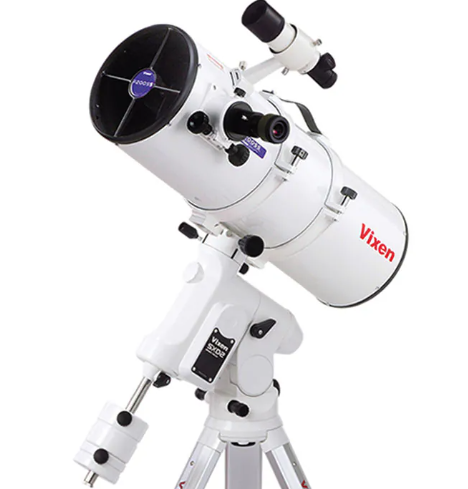
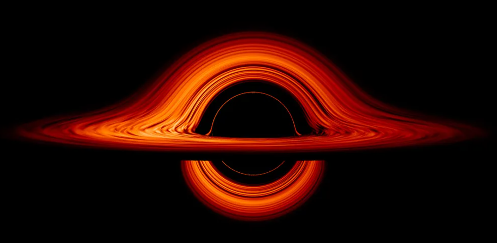
黑洞的第一张照片，来自射电波段，而不是可见光。
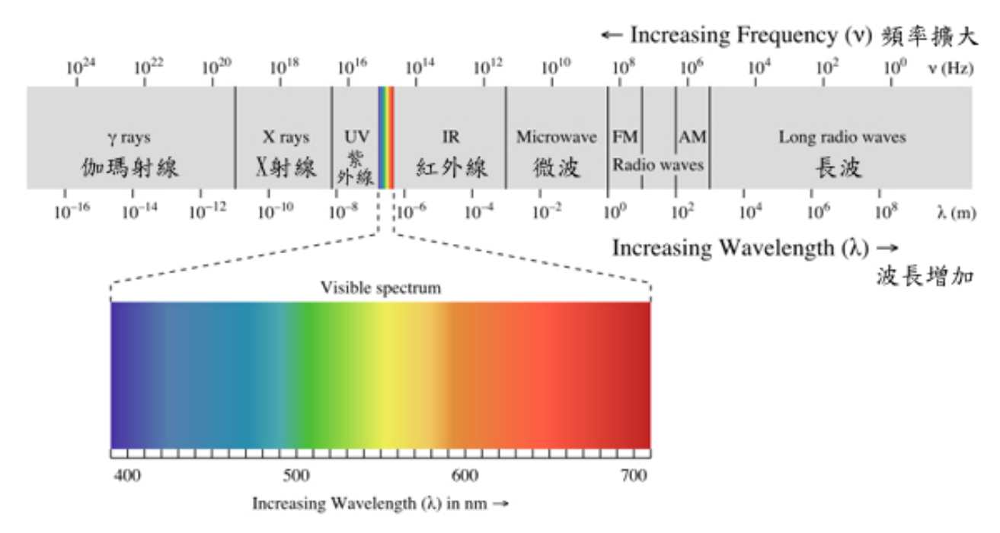
可见光只占极窄一段，
所以要造不同波段的望远镜。
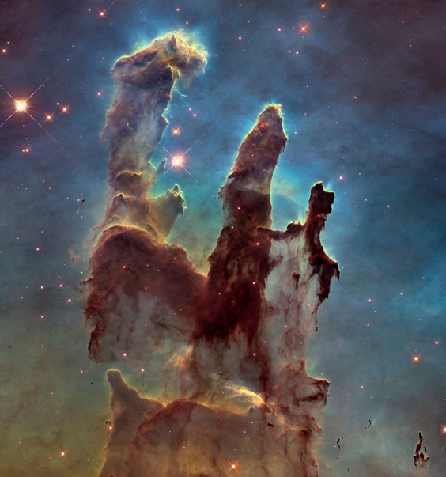
拍到最遥远的星系，揭示宇宙膨胀的秘密。
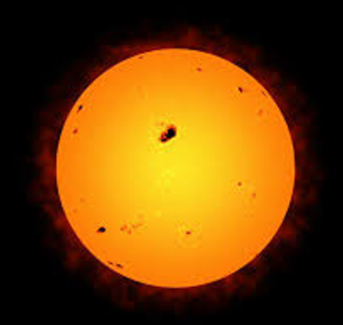
捕捉遥远星系的微光，追问宇宙的起源。
看恒星从诞生到死亡，读懂核反应。
间接“看见”暗物质，破解加速膨胀之谜。
用历史数据预测日食、彗星回归。
喀斯特洼坑天然成型，工程难度极高。
主动反射面实时调整面形，灵敏度极高。
搜寻脉冲星、探测引力波、研究宇宙起源。
世界最大单口径，显著提升中国天文地位。
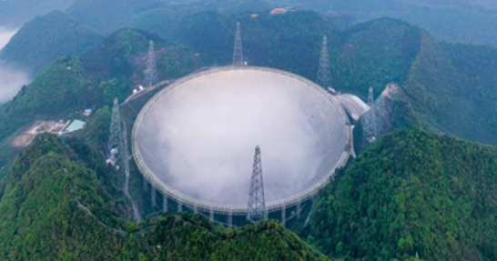
4 米主镜 + 4000 个可调光纤，大视场巡天。
每晚约 4000 个天体，累计数百万条光谱。
发现新恒星与星团，描绘银河系结构。
数据全球开放共享，提升国际影响力。
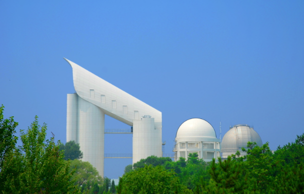
空间站光学舱搭载，实现全天候、全波段观测。
先进光学系统 + 高灵敏探测器，稳定运行。
探索暗物质暗能量，寻找地外生命迹象。
计划十年内发射，引领全球天文研究。
伽利略把望远镜指向天空，天文学从此改变。
折射、反射到折反射，视野一次次被打开。
凯克、哈勃与多波段观测，进入全新时代。
更高分辨率、更大范围，望向宇宙深处。
口径更大，捕捉更微弱的宇宙信号。
可见光、红外、射电数据联合分析。
AI 自动识别天体，观测更快更准。
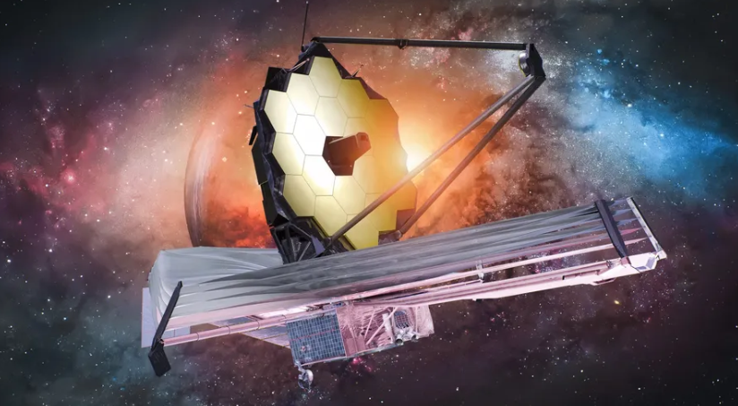